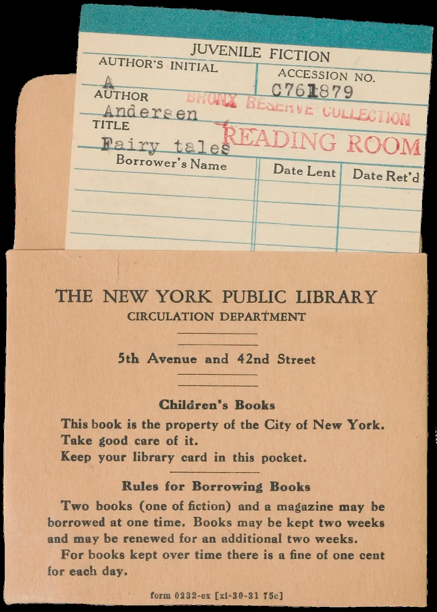
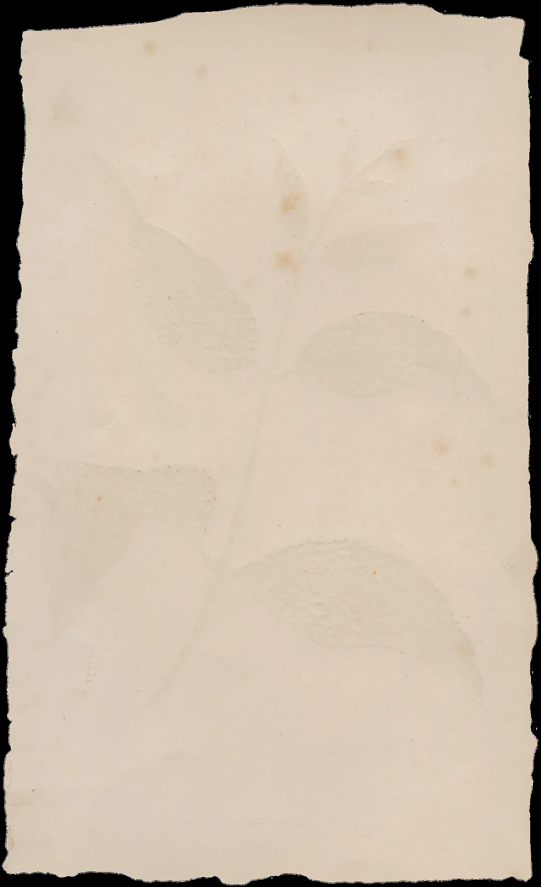
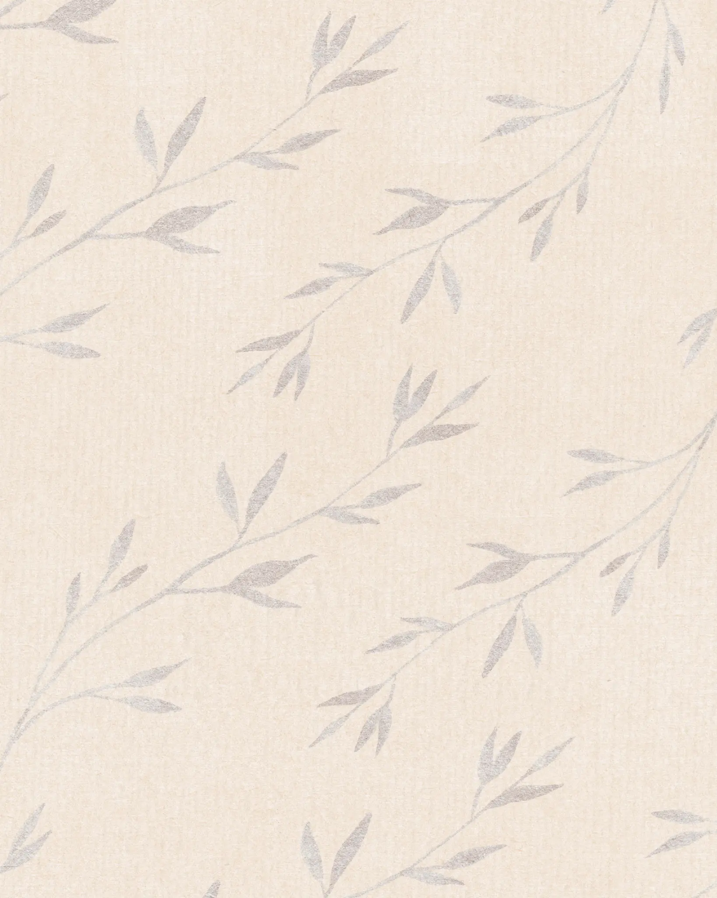
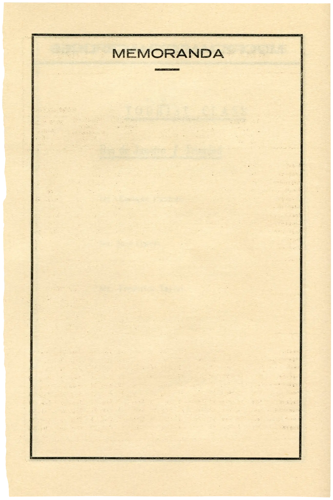
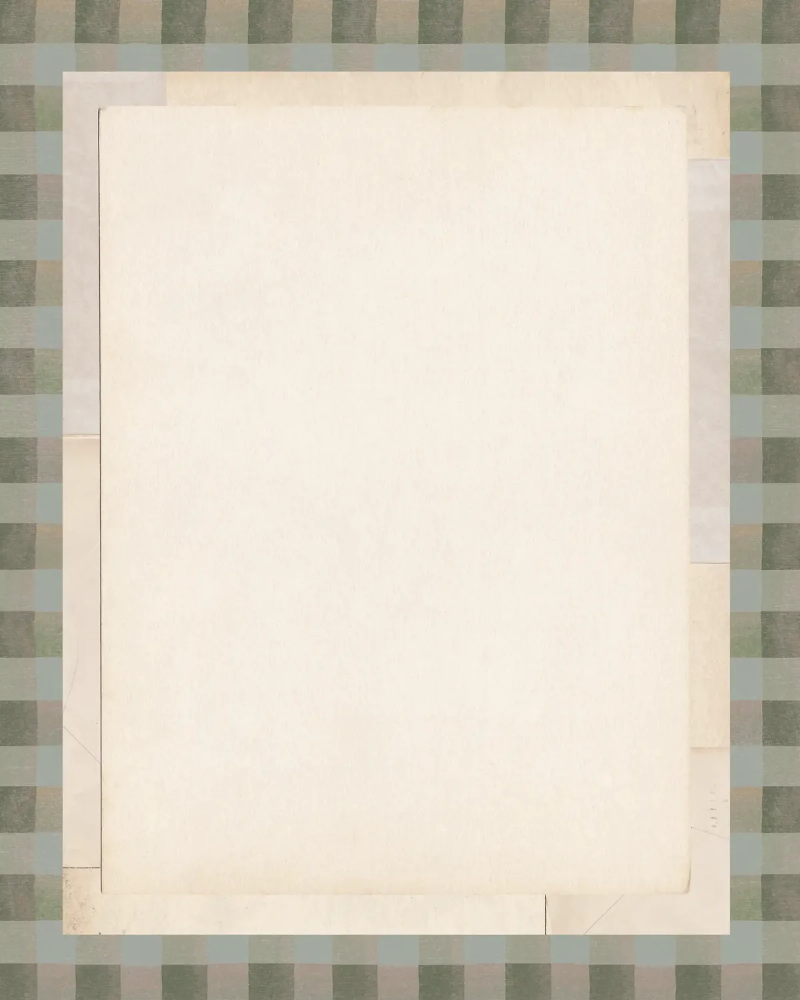
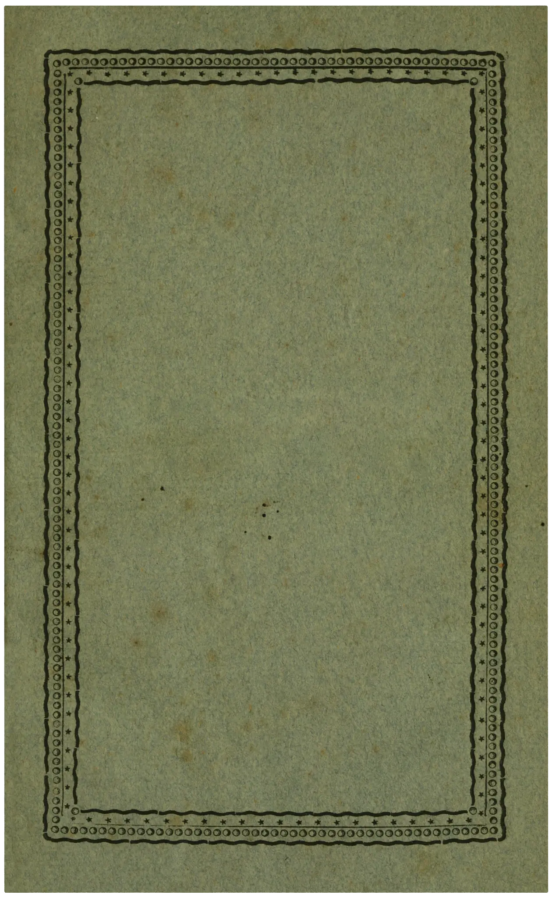
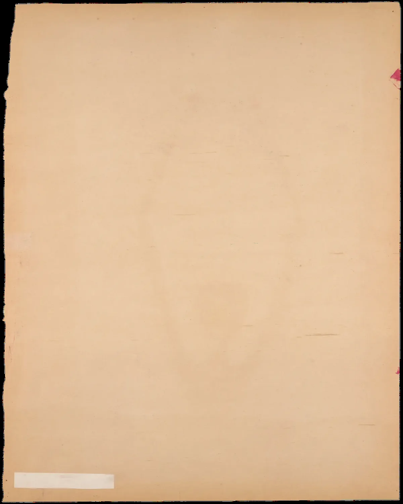
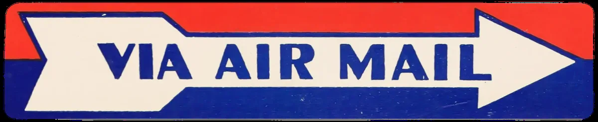

About Kayla
Kayla Canfield is an Administrative Assistant II at Mount St. Mary's University and a master's student in Instructional Design and Technology. She designs learning materials, builds workplace systems, and writes about culture, history, and education.
Click any drawer to open
Currently completing a Master of Education in Instructional Design and Technology at Mount St. Mary's University, with a focus on applying learning design principles to higher education and professional development contexts.
Bachelor of Arts with an interdisciplinary focus in English and Communications, with a minor in History. Graduated from Mount St. Mary's University with departmental recognition for academic writing.
Supported academic operations across English, History, Communications, Political Science, and Sociology departments. Managed faculty communications, event coordination, and records systems.
Uniquely positioned at the intersection of instructional design and the humanities. Brings literary analysis, cultural research, and archival thinking to the practice of learning design.
Recipient of the English Department Award at Mount St. Mary's University for academic excellence and outstanding writing. Recognized for original research in American literature and cultural studies.
Seeking instructional design positions in higher education, nonprofit, or corporate learning contexts. Also applying to PhD programs in humanities, education, and information science fields.



Designed and wrote a comprehensive orientation handbook for incoming faculty, consolidating policies, procedures, and resources from five departments into a single navigable document.
View Case Study →
Developed a structured onboarding module for student workers, reducing training time and creating a repeatable system for future cohorts.
View Case Study →
Redesigned the English Department's semesterly newsletter, improving readability and increasing faculty engagement with departmental communications.
View Case Study →
Built a repeatable planning framework for academic events across four departments, including checklists, timelines, and communication templates.
View Case Study →Capabilities
Instructional Design
eLearning & Technology
Writing & Research
Administration

I am open to conversations about instructional design, educational support work, writing, research, digital humanities, and related graduate study or collaboration.
k.m.canfield@msmary.edu